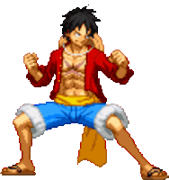
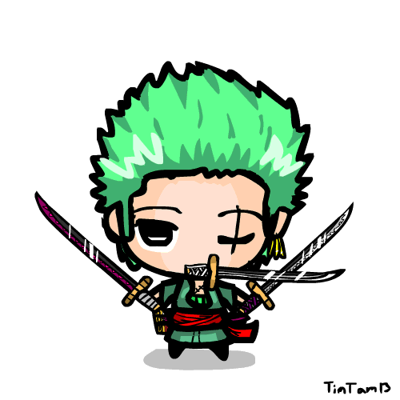
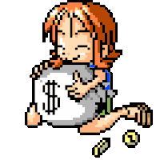
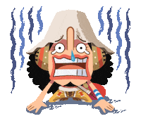
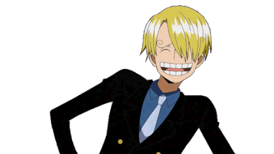
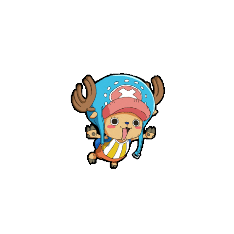
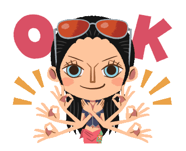
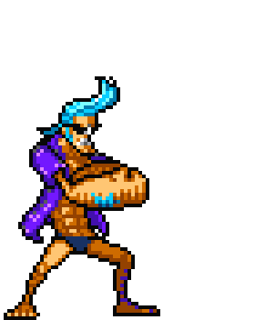
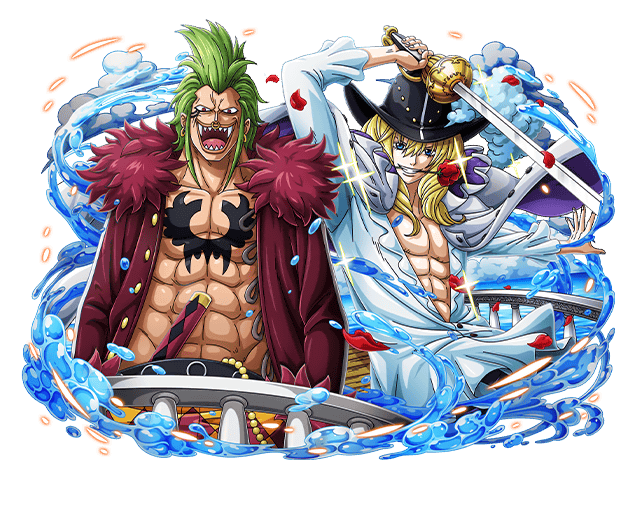

-
Luff O Capitão
- Borracha
Luffy comeu a Gomu Gomu no Mi aos 7 anos de idade, que deu ao seu corpo propriedades de borracha. Luffy tem uma propensão para atrair seguidores e, sem intenção, foi nomeado líder da Grande Frota do Chapéu de Palha.
-
Zoro O Espadachin
- Espadas
Ele foi o primeiro membro a juntar-se à tripulação. Sua fama como mestre espadachim e sua grande força, às vezes levaram os outros a acreditar que ele era o verdadeiro capitão da tripulação.
-
Nami A Navegadora
- Clima
Ela era anteriormente membro dos Piratas do Arlong e juntou-se inicialmente aos Chapéus de Palha com a intenção de roubá-los, mas se tornou de fato um dos Chapéus de Palha.
-
Ussop O Atirador
- Atirador
Apesar de sua covardia normal, Usopp sonha em se tornar um corajoso guerreiro do mar como seu pai.
-
Sanji O Cozinheiro
- Chute
Ele é um dos quatro melhores lutadores da tripulação, Seu sonho é encontrar o paraíso dos chefes, All Blue.
-
Chopper O Médico
- Transformação
Chopper é uma rena que, após comer a Hito Hito no Mi, adquiriu a habilidade de se transformar e raciocinar como os humanos.
-
Robin A Arqueóloga
- Replicar
Usuaria da Hana Hana no Mi, tornando-a consideravelmente poderosa, podendo replicar partes do seu corpo em quais quer outras coisas vivas.
-
Franky O Carpinteiro
- Robo
Ele é um cyborg de 36 anos de Water 7 Ele foi originalmente chamado de "Cutty Flam" até trocar seu nome original por seu apelido a pedidos de Iceburg.
-
Brook O Musico

- Esqueleto
Ele é um usuário de Akuma no Mi que comeu a Yomi Yomi no Mi, o que o torna um pseudo-imortal por causa de seus poderes.
-
Jinbe O Timoeiro

- Karatê
Jinbe é um homem-peixe sendo um tubarão-baleia e um poderoso mestre do karatê Homem-Peixe.
-
Grande Frota
- Piratas
A Grande Frota do Chapéu de Palha é uma frota formada por sete tripulações piratas que prometeram servir sob Monkey D. Luffy e os Piratas do Chapéu de Palha.